Show what is known
Start with public disclosures and link the sources. Mark what is inferred instead of presenting a reconstruction as insider knowledge.
Case studies connect what teams have publicly disclosed to what the architecture costs per request, task, or event. Facts, inference, and estimates stay distinct; models expose their assumptions so you can rerun them.
Start with public disclosures and link the sources. Mark what is inferred instead of presenting a reconstruction as insider knowledge.
Make the unit, rates, workload, and exclusions visible. Follow cost through retries, storage, transfer, and failure—not just the headline service.
Change assumptions in free calculators that run in your browser. No signup and no calculator inputs sent to Buildopsy.
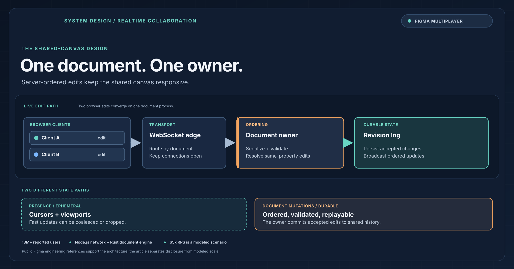
How document ownership orders edits, WebSockets fan out changes, and cursor presence stays on a separate path.
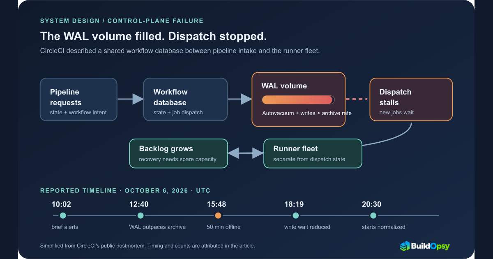
Anti-wraparound autovacuum saturated the orchestration database's WAL volume. The 50-minute outage became hours of queue recovery.
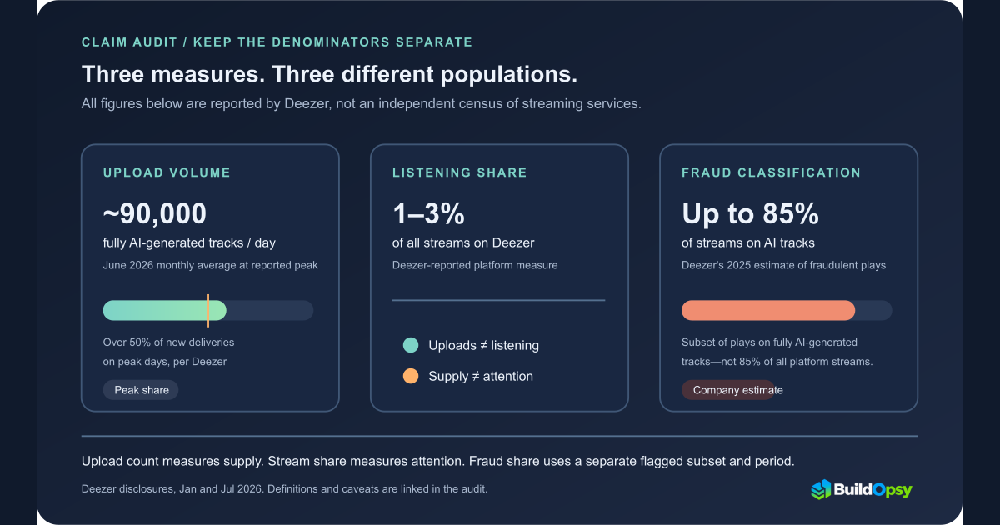
A denominator-by-denominator audit of synthetic music uploads, listener share, Spotify spam disclosures and stream fraud.
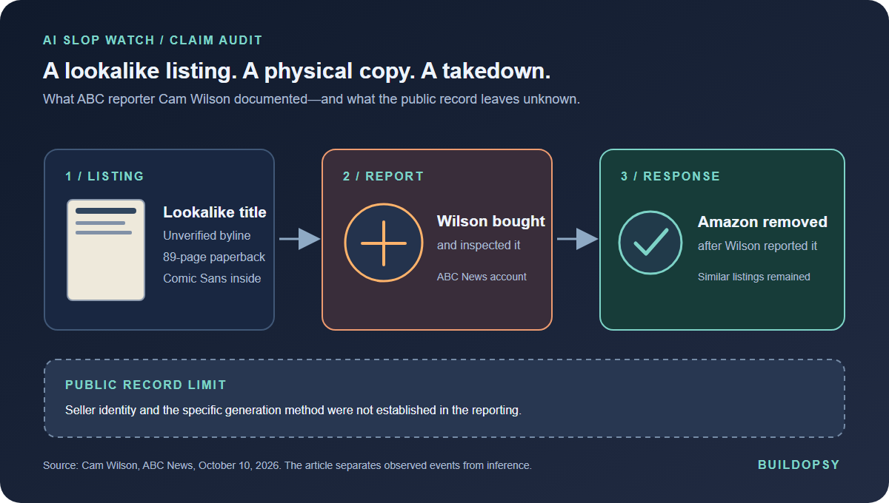
A reporter bought a suspicious lookalike of his own book. Amazon removed it after his report; the seller and generation method remain unverified.
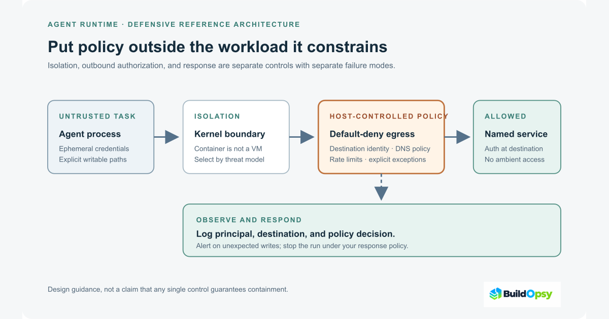
How proxy exceptions fail and what identity-bound egress controls cost under an explicit workload model.
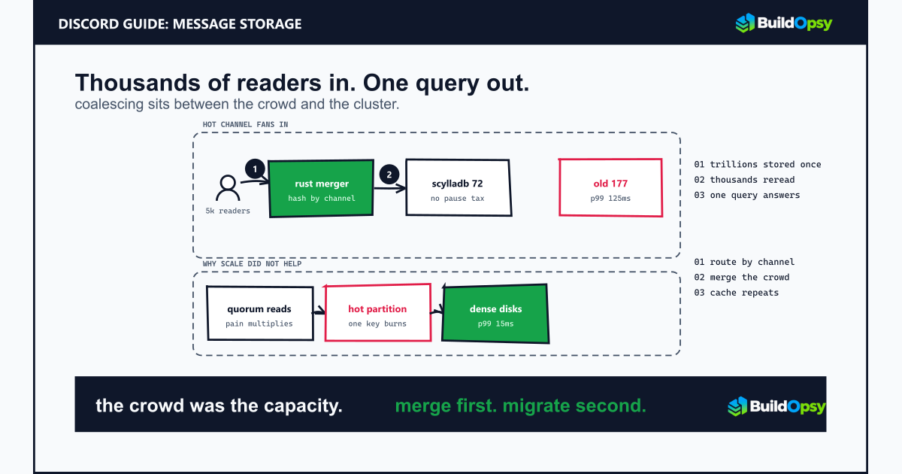
Channel partitioning, quorum read fan-in, Rust coalescing plus the engine swap from 177 nodes to 72.
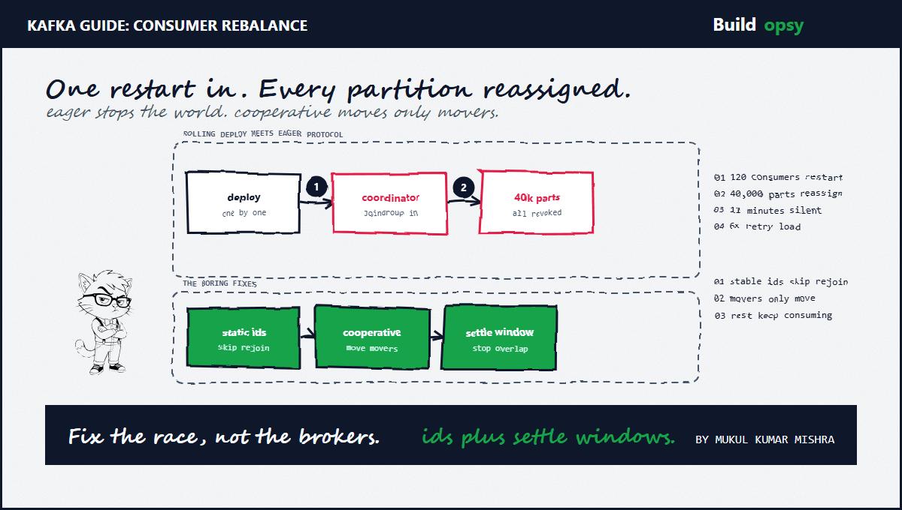
Eager versus cooperative protocols, static membership, fetch storms plus the 6x retry amplifier.
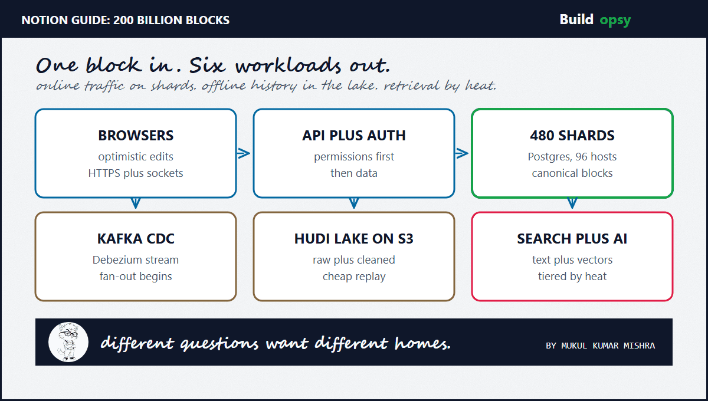
How Notion scales: 480 Postgres shards, CDC lake, vector tiering plus the bill behind a blank page.
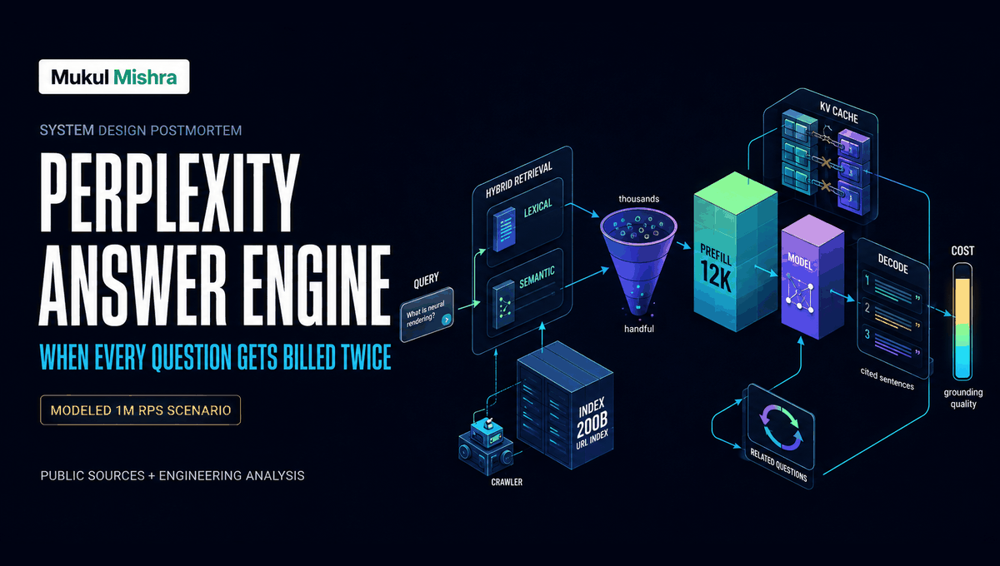
A forensic teardown of RAG retrieval, KV cache flaws, prefill tax, 780M monthly queries plus the cost difference at 1M events per second.
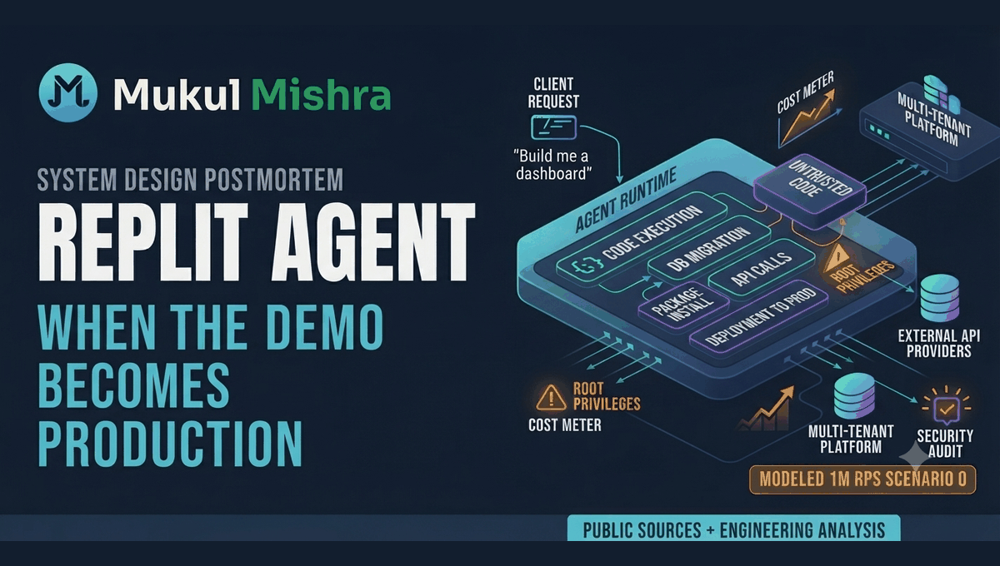
A deep teardown of prompt-to-production software, sandbox execution, agent retries, deployment risk plus the cost difference at 1M events per second.
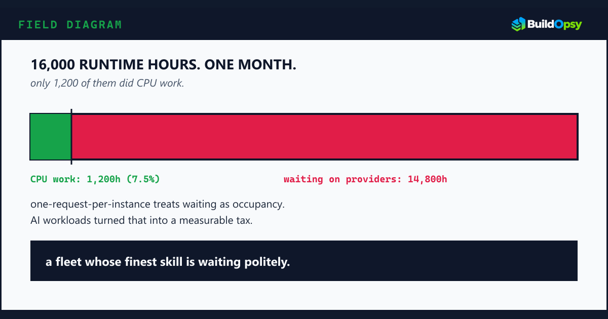
A forensic look at concurrency, cold starts, compute-resolver, AI Gateway waiting time plus the cost difference at 1M RPS.
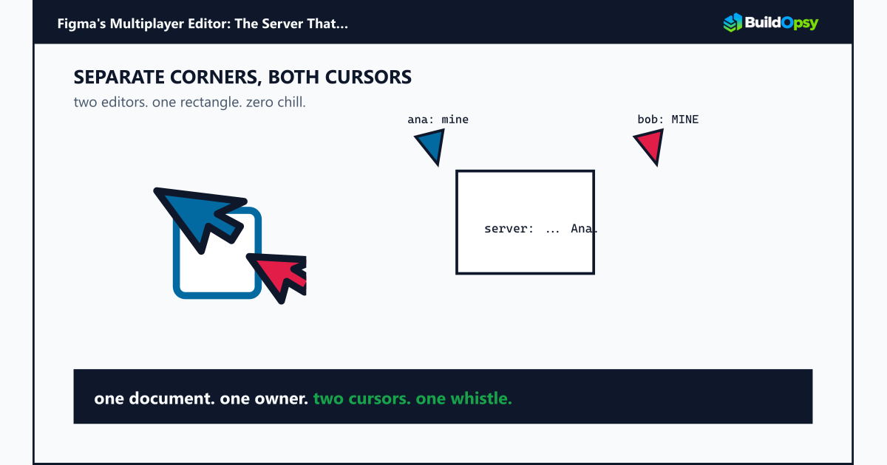
A practical teardown of WebSocket collaboration, Rust isolation, conflict resolution plus the hidden price of an always-live canvas.
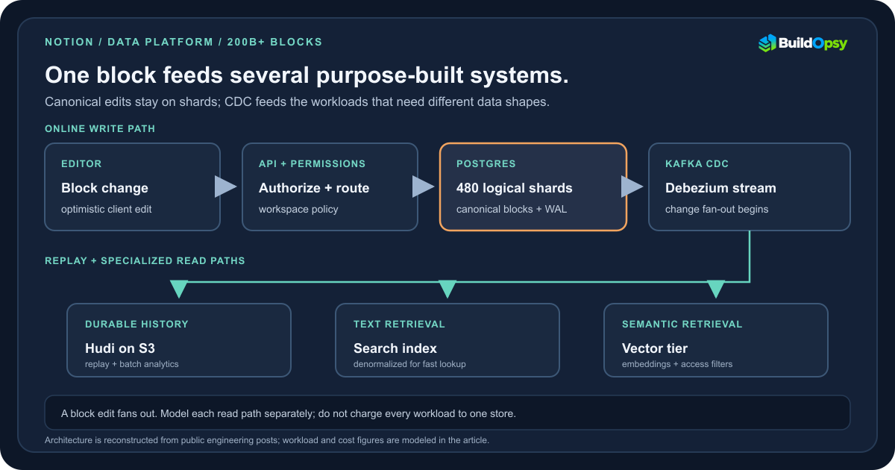
A forensic teardown of Notion's block database, 480 logical shards, CDC pipeline, vector search plus modeled cloud bill.
A control-plane redesign focused on regional isolation, failure containment, Raft plus zero-blast-radius operations.
Requests, APIs, databases, queues, scaling, resilience, caching, cost, plus the interview playbook.
Sandboxing, egress, retries, token bills plus eval gates. From the agent bench, with live diagrams.
Control planes, autoscaling, blast radius plus inference scheduling. From the on-call, with live diagrams.
Causality, quorum, consensus, clocks, retries, and recovery. Every lesson starts with the invariant at risk.
A query lab from analyzers and postings through BM25, hybrid search, and relevance scorecards.
Follow packet diaries through DNS, BGP, TCP, TLS, NAT, and the request’s real latency budget.
Buildopsy is currently ad-free. If a case study or tool helped with your work, an optional coffee helps fund the research behind the next one. No paywall, no pressure, and support never affects coverage or conclusions.